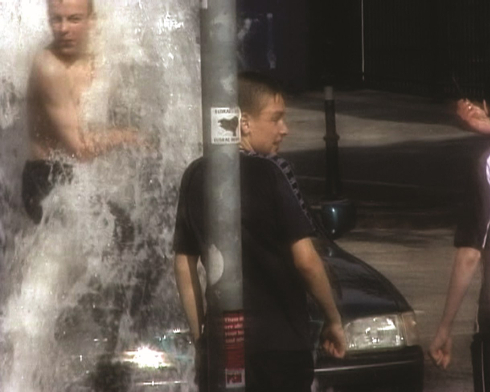

ARTIST IN FOCUS: Seamus Harahan
montag 10 okt 20 uhr werkstattkino münchenDer nordirische Künstler Seamus Harahan (* 1968 in London) rückt meist urbane Landschaften ins Zentrum seiner Filme und Videoarbeiten. In unspektakulären Szenerien lässt er mittels scheinbar amateurhaften, wie zufällig eingefangenen Handkamera-Shots sich eine Ethnologie unseres modernen Alltaglebens in der Stadt entfalten, angesiedelt zwischen Kurzdokumentationen und Musik-Clips.
Ausgangspunkt für ihn ist nicht der genuin künstlerische Akt, vielmehr lässt er sein Kamera-Bewusstsein ganz von dem ihn umgebenden sozialen und kulturellen environment absorbieren. Mit seinen Foundfootage-Arbeiten situiert er sich noch ganz und gar in der Moderne des Flaneurs. In ihr gibt der Künstler dem Anschein nach seinem Gegenstand, dem zufällig Begegneten, größeres Gewicht als dem Akt der Kreation. Dabei überträgt er dem Ephemeren und scheinbar willkürlich sich ereignenden Mikro-Szenerien den Status des Kunstwerks.
Musik ist in Harahans Arbeiten ein wesentliches Element. Sie dient als Soundtrack, ist kompositionsstiftend, titelgebend, oder sie bestimmt die Länge der Einstellung.
2005 repräsentierte der in Belfast lebende Künstler Nordirland bei der Kunstbiennale von Venedig. 2015 gewann Harahan den renommierten Film London Jarman Award.
Harahan wird von Gimpel Fils in London als Künstler
vertreten. Seine Arbeiten werden in Gruppen- und
Einzelausstellungen sowie auf Filmfestivals gezeigt.
UNDERDOX zeigt eine persönliche Auswahl von Peter Taylor,
Leiter des Berwick
Film & Media Arts Festival. Ergänzend
zur Filmvorführung gibt es ein Ciné-Konzert mit Filmen von Seamus
Harahan und Peter Taylor am Akkordeon.
Seamus Harahan und Peter Taylor sind zu Gast.
Website der Galerie (englisch)
